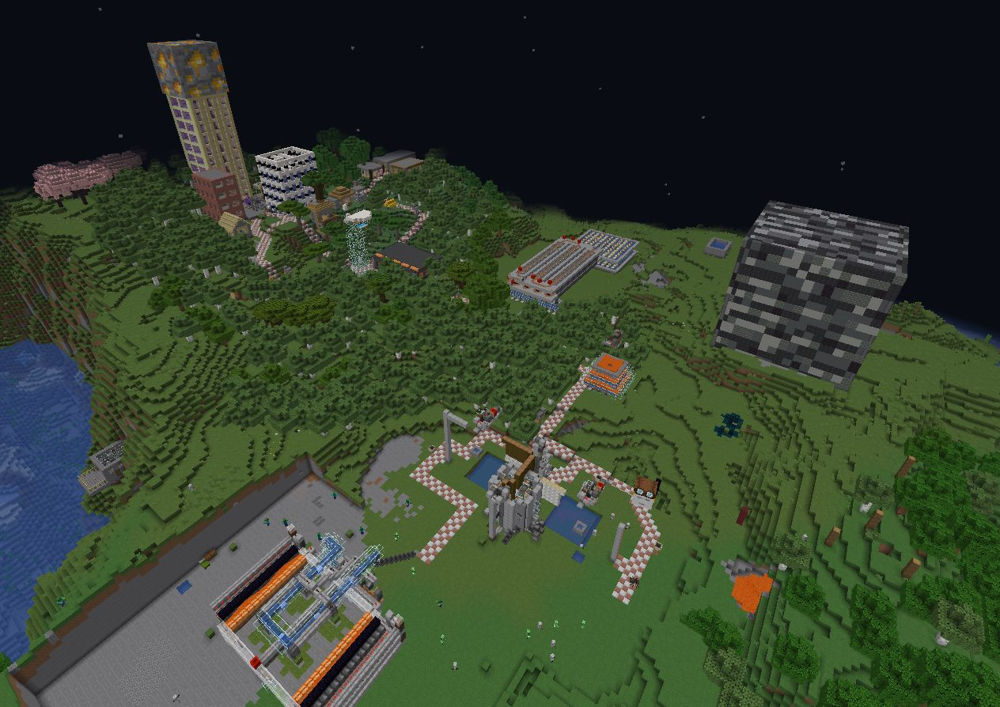
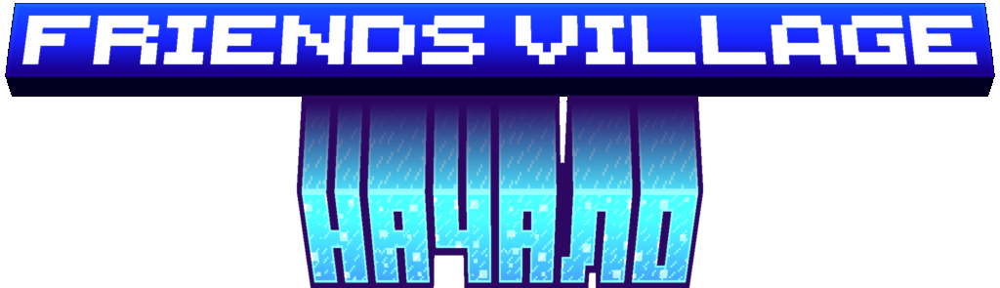
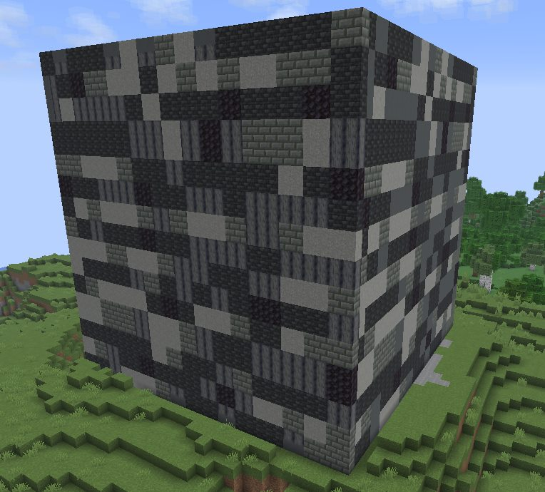

Minecraft-сервер

Построй собственный дом, заведи друзей и создай свою историю в мире, где валюта — золото, а деревни живут по своим правилам.
- Валюта Золото
- На старте Золото и дом
- Мир Свои деревни
- Вход По заявке
О сервере
Место, где деревня становится твоей
Добро пожаловать на сервер Friends Village!
Здесь вы сможете построить собственный дом, развивать бизнес и создать свою историю в мире Minecraft.
Основная валюта сервера — золото. После первого входа каждый игрок получает стартовый запас золота и временный дом, который поможет быстрее освоиться.
На сервере вы сможете найти новых друзей, объединиться с ними и создать успешный бизнес. Торгуйте, развивайтесь и достигайте новых высот вместе!
Мир сервера разделён на деревни, каждая из которых имеет свои правила. Если вы захотите стать лидером, то сможете создать собственную деревню, установить в ней свои правила и приглашать других игроков.
-
Свой дом
Временный дом и запас золота с первого входа — чтобы сразу было где осесть.
-
Золото
Главная валюта сервера. На ней держится торговля и развитие.
-
Бизнес
Объединяйтесь с друзьями, торгуйте и растите общее дело.
-
Деревни
Стань лидером, задай свои правила и зови игроков к себе.
Friends Village — это сервер, где каждый найдёт занятие по душе: строительство, экономика, дружба и совместное развитие!
Мир
Деревни, дороги и свои постройки

Как зайти
Три шага до своего места в деревне
-
01
Анкета
Нажмите «Подать заявку» и ответьте на все вопросы формы.
-
02
Discord
Для игры нужен аккаунт в Discord: там идёт основное общение игроков.
-
03
Ответ
Администрация рассмотрит заявку и напишет в Discord или на почту. Это может занять несколько дней.
Заявка
Готовы зайти на Friends Village?
Заполните анкету. После проверки администрация свяжется с вами через Discord или по электронной почте.
Подать заявку